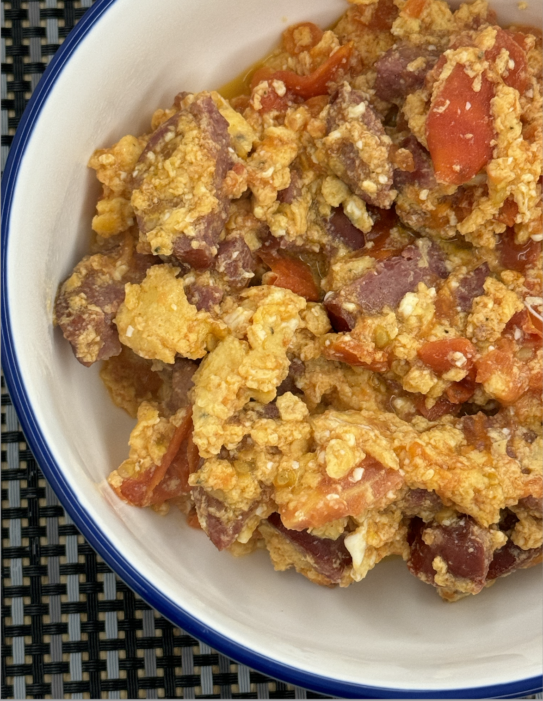

Кулинарные заметки
Завтраки
Закуски
Супы
Основные блюда
Гарниры
Десерты
Кремы/Соусы
Завтраки

Яйца с сосикой и томатами
10 мин
Панкейки с ягодами
25 мин
Яйца с сосикой и томатами
10 мин
Закуски
Яйца с сосикой и томатами
10 мин
Панкейки с ягодами
25 мин